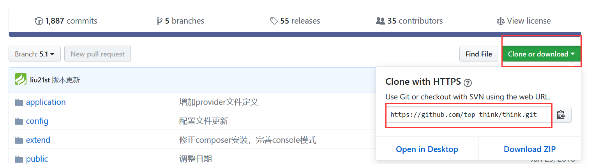
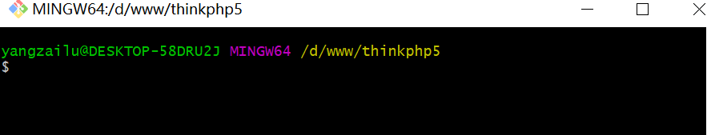
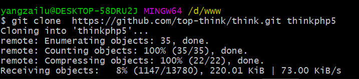
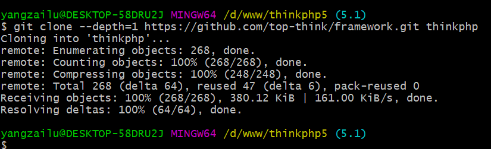
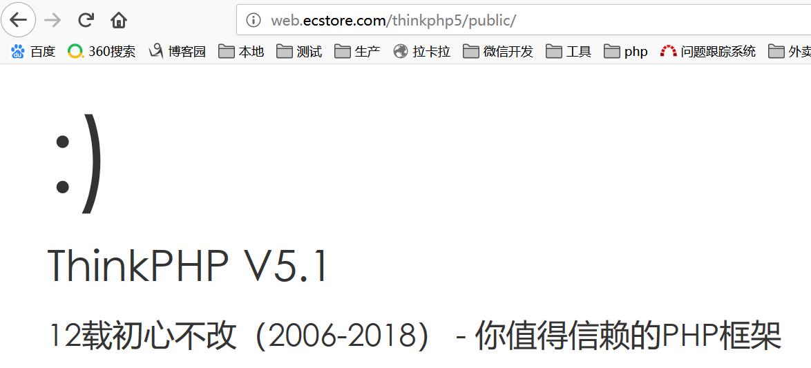

1.thinkphp 的github 代码版本地址：https://github.com/top-think
2. 点击think 复制 地址

3. 新建thinkphp5 文件夹 git clone地址代码
4. 右击 git bash here

5. git clone --dapth=1 (clone 最新的一次代码)

6. clone framework 核心包并新建名称为thinkphp

7. thinkphp5 执行文件在public目录 （要是能看到以下 页面 恭喜您 安装成功）
